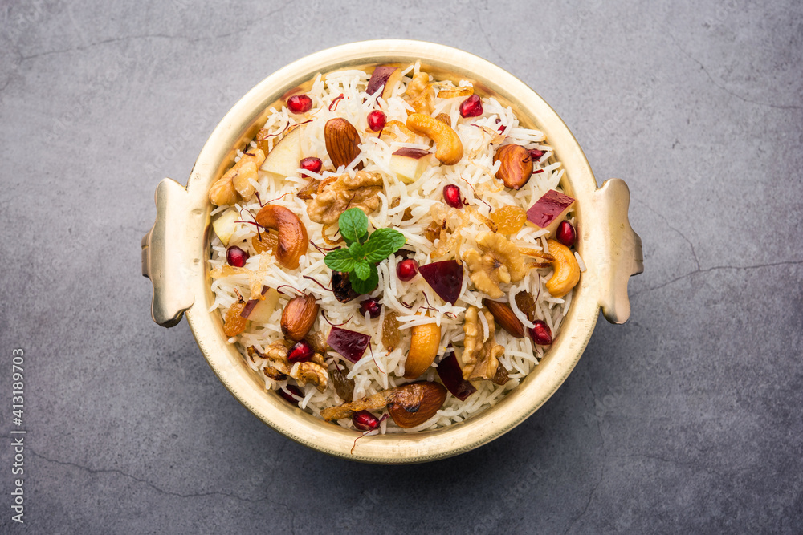
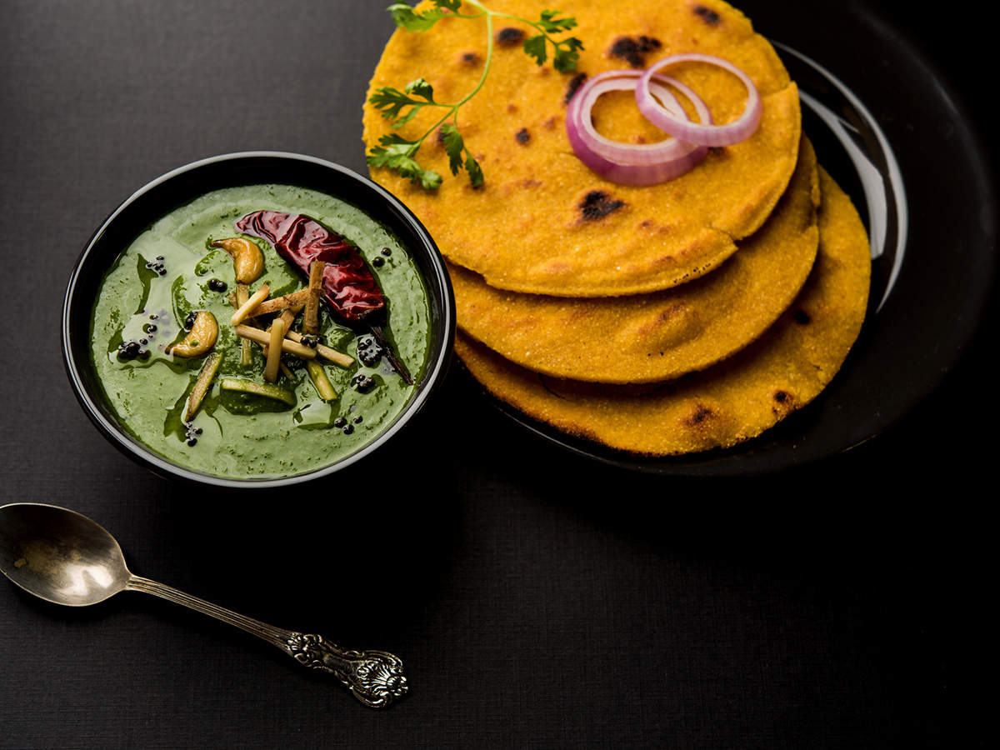

KASHMIRI PULAO

History
Its history can be traced back to the Mughal era when the Mughals ruled over Kashmir.
The word ‘modur’ is derived from the Persian word ‘modar’ which means sweet. This dish is essentially
a sweet rice pudding and was considered a royal delicacy in the Mughal court. The dish was introduced
to Kashmiri cuisine during the Mughal rule and has been an integral part of Kashmiri cuisine ever
since. Modur Pulao is made with fragrant basmati rice, which is cooked with a variety of spices
such as cinnamon, cardamom, and cloves.
INGREDIENTS
2 cups of basmati rice
4 cups of water
1 cinnamon stick
4 green cardamom pods
4 cloves
1/2 tsp salt
1/2 cup sugar
1/2 cup raisins
1/2 cup cashews
1/4 cup ghee
METHOD
Rinse the basmati rice in cold water until the water runs clear. Soak the rice in cold water for 20-30 minutes.
In a pot, bring 4 cups of water to a boil. Add the cinnamon stick, green cardamom pods, cloves, and salt to the water.
Drain the soaked rice and add it to the boiling water. Reduce the heat to low, cover the pot with a lid, and cook the rice for 15-20 minutes until it is tender and fluffy.
While the rice is cooking, heat the ghee in a separate pan. Add the cashews to the pan and fry them until they are golden brown. Remove the cashews from the pan and set them aside.
In the same pan, add the raisins and fry them until they are plump and golden. Remove the raisins from the pan and set them aside.
Once the rice is cooked, remove the pot from the heat and add the sugar to the rice. Stir the rice gently until the sugar dissolves.
Add the fried cashews and raisins to the rice and stir gently to combine.
Cover the pot with a lid and let the rice rest for 10-15 minutes before serving. This will allow the flavours to blend and the rice to absorb the sweetness of the sugar.
Garnish the Modur Pulao with more cashews and raisins before serving.
---------------------------------------------------------------------------------------------------------------------------------------------------------------------------------
MADRA

History
Madra is a traditional dish from Himachal Pradesh, India. It originally belongs to the region of Chamba. It is a rich and flavorful
curry made with soaked and boiled chickpeas or black gram lentils cooked in a yogurt-based gravy.
The gravy is seasoned with various spices like cumin, coriander, cinnamon, and cardamom, giving
it a distinct taste. Madra is often served with rice or bread and is a popular dish during
festivals and special occasions in Himachal Pradesh.
INGREDIENTS
2 Cups Cooked chickpeas
2 tablespoon Ghee | Clarified Butter
1 no Bay leaf
½ " Cinnamon stick
2-3 no's Cloves
4-5 no's Black peppercorns
1 Big Black cardamom or 2-3 no's green cardamom
½ teaspoon Turmeric powder
1 teaspoon Coriander powder
1 teaspoon Red chilli powder
METHOD
You need cooked/boiled chickpeas for this recipe. The best way is to first
soak chickpeas overnight and then boil them in salt + turmeric water. Alternatively,
you can also cook them in an Instant Pot where you need not soak them the night before..
Simply add the dry chickpeas, cover it with 3-4 inches of water above it, then add salt and
turmeric powder and cook in manual mode for 24 minutes with natural pressure release. Once the
chickpeas are cooked, strain use the water to make aquafaband keep them aside for now.
In a bowl add yogurt, all-purpose flour or maida, chilly powder, turmeric powder, coriander and
cumin powder. Whisk it all together until smooth. Heat oil in a pan and fry cumin seeds along with
asafoetida for 30 seconds. Then add cinnamon, peppercorns, cloves and cardamon along with minced
ginger and garlic. Continue to fry for another minute.
The actual Chana Madra recipe doesn't call for any greens in the recipe but since I had some beet
leaves, I decided to add that as well in my curry to make it more nutritious. You can skip this
step if you wish to.Also add half of the chopped cilantro along with the beet leaves and cook it
for 2 minutes or until the leaves turn soft. Then lower the flame and add the prepared yogurt
mixture to the pan. Mix it immediately.
This is an important step, you have to make sure that you stir continuously and do not allow
the yogurt to curdle. Cook this curry for 4-5 minutes on low flame. Then add the boiled
chickpeas along with salt. Mix and continue to cook for another 3-4 minutes.
To thicken the curry, make a paste of rice flour and water and add to the pan. Stir and
garnish with chopped cilantro and ghee. Chana Madra is ready. Serve with any Indian bread/rice.
---------------------------------------------------------------------------------------------------------------------------------------------------------------------------------
SARSON DA SAAG with MAKKI ROTI

History
Sarson ka Saag with Makke di Roti is a traditional dish deeply rooted in the agrarian
history of Punjab, India. Dating back centuries, it originated as a staple among Punjabi
farmers. Sarson (mustard greens) and makke (corn) were abundant crops in the region,
making this dish a natural choice. The preparation method, involving slow cooking and
careful seasoning, has been passed down through generations.
It symbolizes the symbiotic relationship between the land and its people,
reflecting the simplicity and richness of rural life. Today, it remains a beloved dish,
celebrated not only for its taste but also for its cultural significance, embodying the
essence of Punjab's culinary heritage.
INGREDIENTS
For Saag:
750 gms Sarson saag
250 gms Palak saag
250 gms Bathua saag
2 cups Water with a pinch of salt
1 1/2 cup Makki atta
4 Green chillies
25 gms Ginger
2 Onions
6 Garlic cloves
100 gms Ghee
1/2 tsp Red pepper powder
1/2 tsp Garam masala
1/2 tsp Coriander powder
For Makki ki Roti:
1/2 kg Makki Atta
Water (for kneading)
Ghee (for frying)
METHOD
To prepare sarsong ka daal:
Add the three saags, salt and water into pressure cooker & cook over low heat for 1 1/2 hours.
Squeeze out saag and keep saag water aside. Mash saag in the cooker until coarsely ground, and add makki atta and stir.
Put back saag water and a little fresh water & boil over slow fire.
Add green chillies & ginger & cook till saag gets thick.
For tadka, add chopped onions, ginger, garlic, red pepper powder; garam masala, dhania & saute until onions are light brown.
Mix into saag & garnish with julienne of ginger fried in ghee.
To prepare Makke Di Roti:
Knead the makki atta until it becomes a ball, add atta to dry it & knead.
Heat the tava and add a little ghee so that it does not stick.
Make round shapes of makki roti on chakla & carefully transfer to the tava.
Cook with ghee till golden brown.
Serve with hot sarson da saag and gur and white butter.
---------------------------------------------------------------------------------------------------------------------------------------------------------------------------------
HARYANVI KADHI PAKORA

History
Haryana's Kadhi Pakora, a staple dish with ancient origins, reflects the region's culinary heritage.
Originating from the rural kitchens of Haryana, this dish evolved as a way to utilize locally available
ingredients like gram flour (besan) and yogurt. The practice of deep-frying pakoras (gram flour fritters)
and simmering them in a tangy yogurt-based curry dates back generations. With the addition of aromatic
spices like cumin, fenugreek, and turmeric, Kadhi Pakora became a comforting and nourishing meal,
favored by farmers and families alike. Its enduring popularity underscores its role as a cultural symbol,
embodying the simplicity and warmth of Haryanvi cuisine.
INGREDIENTS
For Kaadhi:
2 cups buttermilk
5 tablespoon besan/gram flour
2 green chilies chopped
1 dry red chilli broken
1 teaspoon mustard seeds
1 teaspoon cumin seeds
a pinch asafetida
1/2 teaspoon turmeric powder
1 teaspoon chili powder
salt to taste
1 teaspoon coriander powder
For Pakora
1/2 cup besan
1 onion chopped
1 green chili chopped
salt to taste
a pinch soda
water as required
oil for frying
METHOD
For Kadhi:
In a mixing bowl, add besan whisked buttermilk all sp[ices powder and salt. Whisk again until everything is well combined.
Heat ghee in a pan, add mustard seeds, cumin seeds, dry red chili, and asafetida.
Add green chilies and the buttermilk -besan mixture. Add 1 cup of water and let the mixture boil.
Once boiled let it simmer and cook for 20-25 minutes.
Remove from heat and set aside.
For Pakoras:
In a mixing bowl add all ingredients except water and oil.
Add little water just to bind the ingredients and make a thick batter for pakoras.
Heta oil in a pan and deep fry the pakoras until golden from both sides.
Drain the pakoda on paper towel and add in cooked kadhi.
Serve the hot kadhi pakora with rice.
---------------------------------------------------------------------------------------------------------------------------------------------------------------------------------
PHAANU
History
Phaanu, a traditional dish from Uttarakhand, has deep historical roots dating back centuries.
Originating in the mountainous regions, Phaanu was initially a nutritious meal for shepherds
and villagers, crafted from locally available ingredients like lentils, particularly Gahat
(Kulath) lentils. Its preparation involved slow cooking over wood fires, allowing the flavors
to meld and intensify. Over time, Phaanu became an integral part of Uttarakhand's culinary
heritage, symbolizing sustenance and resilience in the face of harsh mountain climates.
Passed down through generations, this dish embodies the cultural essence of Uttarakhand,
cherished for its simplicity, nourishment, and connection to the land.
INGREDIENTS
For Phaanu:
1 cup mixed lentils (whole urad dal, whole masoor dal, split yellow moong dal)
1 onion, finely chopped
2 tomatoes, finely chopped
2-3 garlic cloves, minced
1-inch piece of ginger, finely grated
1 green chili, finely chopped
1 teaspoon cumin seeds
1 teaspoon coriander powder
1/2 teaspoon turmeric powder
1/2 teaspoon red chili powder (adjust to taste)
1/2 teaspoon garam masala
2 tablespoons ghee or oil
Salt to taste
Fresh coriander leaves for garnish
For Rice:
Fresh coriander leaves for garnish
2 cups water
Salt to taste
METHOD
Wash the mixed lentils thoroughly and soak them in water for about 8 hours or overnight. Drain the water before use.
In a pressure cooker or a deep pan, add the soaked lentils with fresh water (enough to cover them) and a pinch of salt. Pressure cook for about 15-20 minutes or until the lentils are soft and well-cooked.
In a separate pan, heat ghee or oil. Add cumin seeds and let them splutter. Then add chopped onions and sauté until golden brown.
Add minced garlic, grated ginger, and green chili. Sauté for a minute until fragrant.
Stir in chopped tomatoes and cook until they soften. Add coriander powder, turmeric powder, red chili powder, garam masala, and salt. Mix well and cook for a few minutes.
Add the cooked lentils to this mixture. Mix thoroughly and let it simmer on low heat for about 15-20 minutes, allowing the flavors to meld together. Adjust the consistency by adding water if needed.
Rinse the Basmati rice thoroughly. In a separate pot, bring water to a boil. Add rice and salt. Cook covered on low heat until the rice is tender and fluffy.
Garnish the Phaanu with fresh coriander leaves. Serve hot alongside steamed Basmati rice.
---------------------------------------------------------------------------------------------------------------------------------------------------------------------------------
MURGH MUSSALAM
History
Sarson ka Saag with Makke di Roti is a traditional dish deeply rooted in the agrarian
history of Punjab, India. Dating back centuries, it originated as a staple among Punjabi
farmers. Sarson (mustard greens) and makke (corn) were abundant crops in the region,
making this dish a natural choice. The preparation method, involving slow cooking and
careful seasoning, has been passed down through generations.
It symbolizes the symbiotic relationship between the land and its people,
reflecting the simplicity and richness of rural life. Today, it remains a beloved dish,
celebrated not only for its taste but also for its cultural significance, embodying the
essence of Punjab's culinary heritage.
INGREDIENTS
500 gm chicken
1/2 tablespoon nutmeg powder
3 clove
1/2 tablespoon ginger paste
1 tablespoon onion paste
turmeric as required
4 tablespoon mustard oil
3 shallots (small onions)
1 tablespoon cumin powder
2 green cardamom
1 cinnamon stick
/2 tablespoon garlic paste
red chilli powder as required
2 tablespoon yoghurt (curd)
2 green chilli
1/2 tablespoon garam masala powder
METHOD
To prepare this traditional chicken recipe, you need to prepare a spice mix using nutmeg powder, cardamom, cloves and cinnamon and 1 teaspoon of cumin seeds. Add water and mix it well.
Add ginger-garlic, onion & green chilli paste to the powdered spices
Ensure that the consistency of the paste is slightly smooth. Next, add the ginger-garlic paste, onion paste and green chilli puree in a bowl. Add the ground spices, red chilli powder, turmeric powder in the mixture and mix well.
Then take another bowl and add yoghurt. Add the spice paste along with some mustard oil and salt according to your choice. Now add chicken and allow it to marinate in the mixture for at least an hour. Then take another pan and put the remaining oil, and once the oil is hot enough, add the cumin seeds, bay leaves, green chillies and fry them on medium flame.
Then add onions and saute them until they turn light brown. If you like the smokiness of onions and garlic, then stir fry on high flame. This will add a nice smokiness to the dish. Now add the marinated chicken and cook until the oil begins to separate.
Then add water as per your taste and cover the chicken. Then sprinkle salt as per your taste. If you want to make this dish more delicious, add a paste of soaked almonds (optional). This will add a creamy texture to this dish.
Take a nice serving bowl and pour the gravy along with the chicken pieces. Garnish the dish with coriander leaves and serve. If you like you can also garnish it with onion rings.
---------------------------------------------------------------------------------------------------------------------------------------------------------------------------------
DAAL BATI CHURMA
History
An authentic dish from Rajasthan, dal baati churma is quite popular in the region.
The interesting origins of this classic dish arise from the time of wars. The dish
has three parts and so does its history. The baati was brought in by Bappa Rawal to
feed the soldiers of the Mewar kingdom. The dough of wheat was left to bake in the sun
while the soldiers were away at war. On their return, they could eat it with fresh curd.
Similarly, the churma followed when one of the cooks of the Guilhot dynasty dropped some
sugarcane juice on the baati and it was realised that the baati tasted softer due to it.
Finally, dal entered the trio last when the panchamel dal of a royal chef impressed the Guptas of Mewar.
These three came together to form a dish that was meant to provide nutrition to soldiers during battles.
A traditional Rajasthani dish, the spicy dal balanced the flavours of the sweet churma and hard baati.
INGREDIENTS
For the Bati:
1 cup whole wheat course
1/4 cup sooji also known as semolina
2 tablespoons besan also known as chickpea flour
1/4 teaspoon ajwain also known as carom seeds
1/4 teaspoon fennel powder
1/8 teaspoon red chili powder
1/2 teaspoon salt
pinch baking soda
1/3 cup melted ghee
1/4 cup + 1 tablespoon milk as needed to form a stuff dough
For the Churma:
Whole Wheat Flour (Atta)
Ghee (Clarified Butter)
Ghee (Clarified Butter)
Cardamom Powder
Nuts and Dry Fruits (optional)
Desiccated Coconut (optional)
METHOD
Clean all the dals and wash them with water before boiling.Take a ladoo and crush it for churma.
Soak all the dals in plain water.Add salt and turmeric.
Boil the dals in a cooker for three whistles.Blend all of them really well.
For the baati, mix the flour.Prepare a dough by adding little water.
Cover the dough in a cloth for 20 minutes.Take a portion of dough and make spheres by smoothening them.
Make two small depressions on the spheres.Place on the baking tray and apply ghee.Bake the baati for 30 minutes at180 degrees.
For light frying, take a pan full of boiling water.Stir and cook for 15 mins on medium flame.For deep-frying, take a deep frying pan and add ghee.
Deep-fry the baati on medium flameTake them out when cooked.Serve hot with a plenty of ghee.
After preparing the tempering, add the blended dal into the pan, add garam masala, kasuri methi and lemon juice. Mix well on medium flame.
 NORTH INDIAN
NORTH INDIAN